The increase in social chatter, frequent interactions, deeper engagement, expressive emotional characters, etc. are part and parcel of Digital Culture. The internet is quite an exciting and happening platform. The culture is very vibrant and colorful. All shades and hues in forms of posts, reels, etc. leave their impressions on the viewers.
The segregation and segmentation of digital culture is done on various attributes. Specifically, when we think of lavishness, luminosity, dazzling, etc. then we directly think of Instagram. With a whopping 2.35 Billion users it is becoming the most influential Social media platform.
The world has taken a paradigm shift and social media platforms are now regular and most go-to places. Instagram’s digital native’s demographic mostly lies in between the age group of 14-34. It is marked by its parallel social engagement. The users have intertwined their relationships to give birth to opinion leaders who are commonly known as Instagram influencers.
Who are Instagram Influencers?
Influencers on Instagram are opinion leaders of their domain. These subject matter experts always stay at the forefront of their niches. They upload the latest posts, videos, reels, etc. They slowly but steadily have gained massive loyalty from their followers, and this gives them access to build a humongous trustable and authentic followers base.
Instagram Influencers because of their associated attributes work closely with various brands. Latest marketing trends inform us about closer and longer relationship status between brand and influencers.
However, a lot of brands try to indulge in the process and don’t seem to taste success, why is that? It is because they don’t have the required time or experts on their side to nail each element and make it budget friendly. That’s where you can take the help of the top video production company. We provide a world-class your niche-influencer-based video services that include – Video Ads, social media organic videos, product demo videos, explainer videos etc
Let us look at the top 20 Instagrammers in India that you can have on your side as well by just getting in touch with.
Top 20 Instagram Influencers in India Who Are Killing It
Contents
- 1. Ajey Nagar
- 2. Bhuvan Bam
- 3. Kusha Kapila
- 4. Nikhil Sharma
- 5. Farah Dhukai
- 6. Prajakta Koli
- 7. Mithila Palkar
- 8. Yashraj Mukhate
- 9. Komal Pandey
- 10. Kritika Khurana Chhabra
-
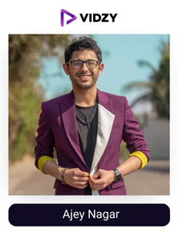
1. Ajey Nagar
Instagram Profile: Ajey Nagar
USP:
He is one of the most prominent influencers in India who has a unique way of spreading smiles.
Ajey Nagar, better known online as CarryMinati, is a streamer and YouTuber from the Indian city of Faridabad. On his YouTube channel CarryMinati, he is well-recognized for his humorous sketches and responses to numerous internet subjects.
He has a second channel as well known as carryislive where Gaming and live streaming are the main focus. In May 2020, he gained a lot of love and followers after his controversial roast video, "YouTube vs. TikTok - The End," which was also one of the most liked videos on the site. However, YouTube deleted the video because it broke the terms of service for the website.
Today, he has one of the highest engagements on YouTube with each of his videos getting millions of views and adoration for the unique kind of funny content he posts making him one of the top Instagram influencers in India.
-
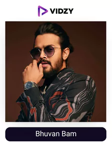
2. Bhuvan Bam
Instagram Profile: Bhuvan Bam
USP:
He shares an insight into his life, really funny dubbing videos and much more which will keep you entertained.
Bhuvan is a well-known figure on social media and a comedian who got his start with the YouTube channel BB Ki Vines which has over 25 million. Bhuvan's YouTube channel has since been scaled back, but he still has over 17.1 million Instagram followers, making him a well-known figure throughout the world.
He has worked with various Indian superstars, The Man Company, and Amazon Prime. He is also set to appear in the forthcoming Taaza Khabar (Disney+ Hotstar production)
-
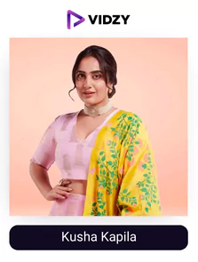
3. Kusha Kapila
Instagram Profile: Kusha Kapila
USP:
You will find the most unique and funny content on her account.
One of the most prominent Indian Instagram influencers and the creator of the "South Delhi chicks" videos on the iDiva YouTube channel, Kusha Kapila, is well recognized. She has a personal channel with 369k subscribers as well.
Kusha has 3.3 million followers on Instagram. She discusses her life as a growing star as well as comic material there. She has worked on the red carpet at prominent film industry events and has partnered with companies like Google and Cred. She also acted in Karan Johar's Ghost Stories and served as a fashion judge.
She was recently seen in Comicstaan 2 as a host and is reaching new steps of success all thanks to her amazing content creation and acting skills in them which has enabled her to reach the top places. Make sure you check out her content!
-
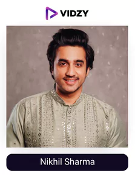
4. Nikhil Sharma
Instagram Profile: Nikhil Sharma
USP:
Nikhil is a master when it comes to showcasing different kinds of content be it around family, funny content.
The "Casey Neistat" of India is a lifestyle blogger by the name of Nikhil Sharma. In 2010, he started a YouTube channel. As "Mumbaiker Nikhil," he quickly gained notoriety for his moto vlogging and amassed around 4 million subscribers.
Nikhil is currently one of the world's top biker and moto vloggers in addition to being a pioneer of Indian influencer marketing. He has 1.4 million Instagram followers and was named "Vlogger of the Year" in 2019 by MTV India and IWMBuzz. Nikhil has worked with several companies, such as Garmin and WB.
He recently had a baby who she named “sky” and is vlogging differently with his family being in the center of them. His fans are loving this new side of his as the quality of his vlogs has not taken a hit even after this change making him one of the most versatile Indian Instagram influencers.
-
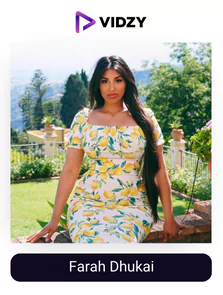
5. Farah Dhukai
Instagram Profile: Farah Dhukai
USP:
She has cracked the code to help you master the beautification process through her easy-to-follow content.
Farah is a well-known DIY beauty hacker with Indian influences on YouTube and Instagram. With 6.4 million Instagram followers and 2.3 million YouTube subscribers, she offers advice on DIY cosmetic routines, hair treatments, and beauty products.
She has worked with several businesses since she began her internet career in 2010 and has also introduced her own skincare line, Farsali. Farah was reared in Toronto, Canada, where she now resides with her husband and child.
What separates her from other creators is her ability to come up with informative content in the most unique and engaging way possible making her one of the finest instagram influencers in India.
-
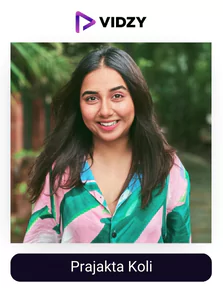
6. Prajakta Koli
Instagram Profile: Prajakta Koli
USP:
He provides funny and relatable content and has one of the most genuine personalities making her audience obsessed with her.
One of the rare female Instagrammer from India who has had a quick ascent to the top is Prajakta Koli. Koli made her debut in the entertainment industry in 2015 with the satirical comedy channel MostlySane, and she later had her own Netflix series, Mismatched.
She appeared in a variety of digital products and has her own YouTube Originals. She appeared in "Jug Jug Jeeyo," a movie directed by Karan Johar and starring Varun Dhawan, Neetu Kapoor, Anil Kapoor, and Kiara Advani. Her short film, Khayali Pulao, which received a Daytime Emmy Nomination in 2017, also made her a producer. Prajakta Koli, a young celebrity, was recently recognized for her support of many causes by UNDP India as the country's first youth climate champion.
Today she shares an insight into all her projects and amazing reels which keeps her audience hooked onto her account having more than 5.1 million followers. Make sure you check out the content of one of the top Indian influencers on Instagram.
-
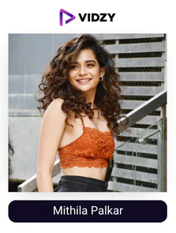
7. Mithila Palkar
Instagram Profile: Mithila Palkar
USP:
She is a bundle of energy and skills which she showcases on her Instagram account from time to time.
Mithila is an internet sensation due to her more than natural acting and unique content on her Instagram account. When Mithila Palkar's rendition of The Cup Song shot to online prominence in 2016, she was pursuing an acting career. More than 6 million people have viewed this since she posted it on her YouTube account. She now has 168k subscribers on her channel, and she has 4 million Instagram followers.
Her acting career is currently thriving, as she has secured roles in the Bollywood film Katti Batti and Netflix's Little Things. Mithila collaborates with a number of companies, such as Times Prime and Plumb Goodness.
She has several talents that she doesn’t shy away to share on her account along with BTS of her shoots and personal life, this is what keeps her audience engaged with her. This has led to ithila having one of the most followed instagram handle.
-
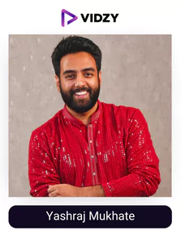
8. Yashraj Mukhate
Instagram Profile: Yashraj Mukhate
USP:
He is a talented musician/producer who can make you laugh and awestruck at the same time with his unique tunes.
Yashraj is a musician/ producer who hails from Aurangabad, his passion made him start creating content on Instagram. Anyone who spent enough time last year aimlessly scrolling through social media is familiar with Yashraj Mukhate's "Rasode Mein Kaun Tha" clip, which parodies a line from the similarly parodic and clichéd Hindi soap opera Saath Nibhana Saathiya.
He is one of several Internet artists who have quickly amassed a sizable fan base, including Ronit Ashra, Ruhee Dosani, and Niharika. "I had no idea it would get past the point where people would recognize me", the man claims.
Mukhate has a sizable following on Instagram (2.4 million) and YouTube (4.5 million), which has given him the freedom to pursue the topics he finds interesting. Although the mash-up meme videos help him gain popularity, they do not satisfy his need for creativity. "I don't want to be known as the person who only produces catchy tunes," he says. Make sure you check out the content of one of the most famous Indian Instagrammers.
-
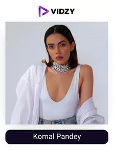
9. Komal Pandey
Instagram Profile: Komal Pandey
USP:
She makes sure she is consistent and up a notch from others when it comes to her content.
Fashion influencer Komal Pandey rapidly caught the eye of the social media community because of her unusual sense of humor. She launched her YouTube channel in 2017 with a focus on what she called "college couture," and since then, she has worked as a stylist for the well-known channel popxo.
Today, Komal has 1.9 million Instagram followers and 1.15 million YouTube subscribers. She has collaborated with over 100 businesses, such as Olay and Vivo India.
Her attitude towards her work and confidence she has on her skills is what makes her so successful and one of the finest instagram influencers in India.
-
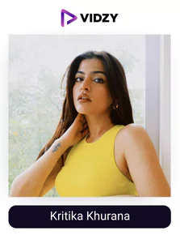
10. Kritika Khurana Chhabra
Instagram Profile: Kritika Khurana Chhabra
USP:
She will make you fall in love with her personality and content as it is so pure and unfiltered.
Indian travel blogger, fashion influencer, and social media content producer Kritika Khurana is well-known. When Kritika Khurana first began posting her "Outfit of the Day" or #OOTD on Instagram roughly eight years ago, she began her career as a fashion influencer. She subsequently launched her blog, "That Boho Girl."
The influencer from Delhi has a sizable fan base on Instagram and YouTube. She frequently collaborates with well-known companies such as L'Oreal, Myntra, Knorr, Pure Sense, and many more.
Her Instagram account is a treat for her fans or audience as she is consistent and makes sure to add some value to whatever she puts out. She recently got married to the love of her life, Aditya Chhabra.
Today, she is one of the top Indian female Instagram Influencers owing to the variety of content and confident opinions she has. Make sure you check out her content!
-
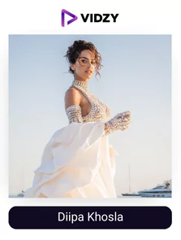
11. Diipa Khosla
Instagram Profile: Diipa Khosla
USP:
She is one of the most sought-after fashion influencers owing to the way she has built her personality.
Diipa is one of the top Indian female Instagram influencers owing to the quality she puts out since the start. In order to advance her own brand as a fashion influencer, Diipa Khosla first started her online job as a social media manager. Since then, she has changed roles once again, going from influencer to full-fledged businesswoman, and has introduced her own Ayurveda-focused beauty brand, Inde Wild.
When she married Dutch diplomat Oleg Büller in 2018, she garnered media attention and was profiled in Harper's Bazaar. Over the length of their four-day wedding, she wore nine different outfits. Diipa has 18.3k subscribers on YouTube and 1.9 million followers on Instagram, where she posts about fashion, beauty, and affluent living.
Diipa is the co-founder of the Post For Change charity and the first prominent Indian influencer to work with MAC cosmetics.
-
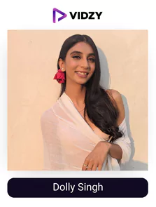
12. Dolly Singh
Instagram Profile: Dolly Singh
USP:
Dolly Singh is synonymous with high quality content that will keep you engaged.
Dolly has 1.6 million Instagram followers and is another contributor to the iDiva YouTube channel. She started a blog on style and fashion when she was still in college. She comes from modest origins.
Dolly now represents her own unique influencer business and has worked with other Indian stars like Priyanka Chopra and Ayushmann Khurrana. Additionally, she has collaborated with a few brand partners, such as Colgate and Olay.
Her ability to put a variety of content from fashion to comedy and perfecting each of them is what makes dolly have one of the most followed instagram handle.
-
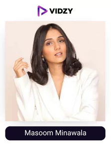
13. Masoom Minawala
Instagram Profile: Masoom Minawala
USP:
She has a strong influence in the fashion or lifestyle field owing to the authority she has built with collaborations and the amazing knowledge she has.
Masoom is a leading Indian artist in the world. Her 1.3 million Instagram followers are drawn to her artistic pictures, vibrant aesthetic, and high-fashion look. The fashion and lifestyle blogger, who was born in Mumbai, has since moved to Belgium.
She has collaborated with a number of famous companies, including Moda Operandi and Louis Vuitton making her one of the top Indian female Instagram influencers.
-
14. Karan Dua
Instagram Profile: Karan Dua
USP:
He will make your mouth water with his amazing food reviews.
Food blogger Karan Dua, 32, is from Delhi. He publishes food reviews and recipes. The lack of a diploma and a poor financial situation forced Karan into this. What supports him now is his love of eating.
This is where he stepped into Instagram as well where he does promotions, gives an insight into his personal life, and gives short reviews of multiple places making his following touch 1 million. He is one of the highest paid Instagram influencers in India owing to the authority he has generated in the field of food. Make sure you check out his content!
-
15. Kenny Sebastian
Instagram Profile: Kenny Sebastian
USP:
One of the funniest comedians who comes up with unique concepts to keep his audience entertained.
If you enjoy stand-up comedy, you've probably heard of Kenny Sebastian. He was impossible to miss! He performs live all over the world in crowded houses and sold-out events. He now tours India.
Kenny served as a judge on the stand-up comedy competition show Comicstaan, which also included other well-known stand-up comedians including Kanan Gill, Abish Mathew, Kaneez Surka, and others. He is a producer/ singer, and at the age of just 21, he even edited a Bollywood film!
This top social media influencer in India became well-known because to the social media sharing of his film, "Middle-Class Restaurant Problems." He is the host of the show "Chai Time With Kenny," in which he converses with his viewers, makes jokes, and plays music while sipping tea. In order to create the "Ken and Chip" comic strip series about his dog, he collaborated with @awkwerrrrrrd.
A number of brand collaborations, including those with bumble, Gilette, and other companies, have resulted from Kenny's reputation and notoriety as well as his above 6.50% interaction rate making him one of the highest paid instagram influencers in India.
-
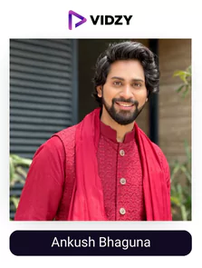
16. Ankush Bhaguna
Instagram Profile: Ankush Bhaguna
USP:
He will bring you funny videos and content that you have never seen before.
Ankush Bahuguna's Instagram account is known for its hysterical but cringe-worthy reels, funny sketches, satirical videos, and content that challenges stereotypes. The vicious mother of Ankush, who has previously appeared in videos for MensXP and iDiva, has also made an appearance in various videos (mainly roasting his son!).
He is a well-known or one of the top Instagram influencers in India who is well-known for his drip lifestyle and stylish makeup. Most of his 1M Instagram followers love his funny and humorous posts and clips.
For a daily dose of humor that will make you laugh aloud, check out his Instagram feed. He provided a perfect example of how to take advantage of viral challenges while under lockdown.
-
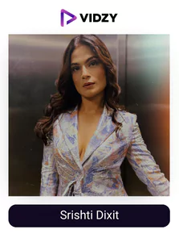
17. Srishti Dixit
Instagram Profile: Srishti Dixit
USP:
She has one of the best sense of humour which she displays with her unique content consistently.
Srishti, one of the most recognizable online personalities in India, rose to prominence thanks to her videos for Buzzfeed India, where she was a content writer. As a result of viral films like "If Real Life Was Like Big Boss" and "If Koffee With Karan Happened In IRL," this unintentional actor became famous overnight.
After a few years, Srishti left Buzzfeed India and is now a freelance content creator. Kusha Kapila and Srishti's humorous new series "Behensplaining" on Netflix India's YouTube channel explains what the "behens" throughout the world are thinking. Check these out if you want to see some hilarious comedy skits.
By responding to the comments on "Ask Me Anything," Srishti engages her audience at a rate of over 13%. Wacoal India, Flipkart Video, Emma Mattress, GIVA - Modern Silver Jewellery, ICICI Bank and Mastercard India, JOVI INDIA, OnePlus Buds Z, Alpenliebe India, Olay India, and Amazon Alexa India are just a few of the companies with whom she has worked making her one of the best Indian female instagram influencers.
-
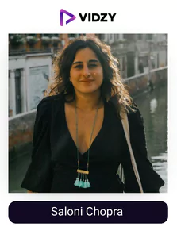
18. Saloni Chopra
Instagram Profile: Saloni Chopra
USP:
She is so versatile that her fans come from different areas of influence such as entrepreneurship, acting, book lovers, etc.
This Indian-born Australian model has a strong online presence on Instagram and is also an actor, business owner, and author. Saloni, a Mumbai native, was raised around movies. She has a part in Prem Granth by Madhuri Dixit. That began Saloni's steadily expanding acting career.
Later, she became well-known thanks to appearances in films like Race 3 and Screwed up Maggy. She ignited the stage in 2016 when she portrayed "Isha" in MTV's "Girls on Top." This multifaceted influencer never allowed limitations to hold her back. Early in her career, she served as an associate director on the films Krish 3 and Kick.
Saloni, who is brave and gorgeous, wrote a book titled "Rescued by a Feminist: An Indian Fairytale of Equality and Other Myths." After speaking at the Editor's Panel Feminist Voice of the Year 2019, Saloni isn't afraid to voice the harsh realities that women must deal with daily. No surprise this dynamic actress is on our list of the top Indian influencers on Instagram—she is a voice for many!
-
19. Saransh Goila
Instagram Profile: Saransh Goila
USP:
one of the best chefs who comes up with food-related content and recipes that will make you a Masterchef.
Since winning a cooking game program in 2011, Saransh Goila has advanced in the chef ranks. Goila, the creator of the Goila Butter Chicken quick-serve restaurant franchise, served as a guest judge on Masterchef Australia and tasked the competitors with recreating his famous butter chicken dish.
Goila holds the record for the "Longest Road Journey by a Chef," taking 100 days to travel across India and sample local cuisines. Goila, an advocate for Indian cuisine with a sizable social media following, has also served as the face of companies including Cinepolis, Alpenliebe, and Samsung Galaxy.
-
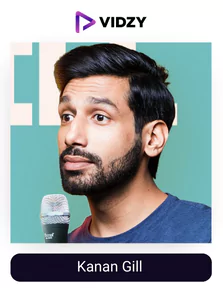
20. Kanan Gill
Instagram Profile: Kanan Gill
USP:
He will bring a smile to your face with his relatable comedy pieces and great content.
A humorous person, the comedian, the co-star of Biswas Kalyan Rath in Pretentious Movie Reviews on Instagram. The person who never fails to bring a smile to your face and isn't embarrassed to do it at his own expense!
Kanan began his career as a software engineer before deciding to leave his day job and follow his love for stand-up comedy after succeeding in a few competitions. He became well-known for his program "Pretentious Movie Reviews," in which Biswas mocked well-known Bollywood films. He now has a sizable fan base and is a megastar and one of the top Indian influencers on Instagram.
To Sum Up
A customer will only buy your product or service when they understand it truly and can attach a face to the brand to get a feeling of authenticity or reliability. This is exactly why over 65% of consumers purchase a product or service after watching a branded social video as per tubularlabs. Vidzy is taking it one step forward by giving you the top creators in every video format promoting your brand with the perfect script and setting to get you tons of engagement.
So, what are you waiting for? Get in touch with Vidzy now!